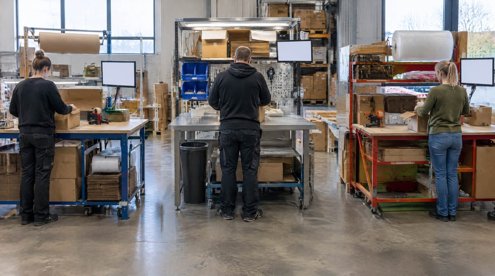

Tre plukkere. Den ene scanner alt. Den anden scanner når der er tvivl. Den tredje scanner aldrig. Ingen af dem gør noget forkert, for der er ikke aftalt noget rigtigt.
Så starter der en ny. Vedkommende følger den der har tid, og lærer den metode. Hvilken metode det bliver, afhænger af hvem der havde tid den dag.
Det er ikke et personaleproblem. Det er et hul der hvor standarden skulle have været.
Hvad det vil sige at mangle en standard
- Der findes ingen aftalt måde at plukke en ordre på
- Der er ikke sagt hvad der er godt nok
- Ingen ved hvem der gør det rigtigt, fordi der ikke måles
- "Sådan gør vi her" findes kun i hovedet på folk
👉 Kender du det? Se hvordan SmartPack løser det
Sådan ser det ud når det er blevet et problem
- Fejlraten er meget forskellig fra medarbejder til medarbejder
- Nye lærer forskellige metoder afhængigt af hvem de følger
- I kan ikke svare på hvad jeres standard er, hvis nogen spørger
- De samme fejl gentager sig, og ingen kan pege på hvor de opstår
- Kvaliteten afhænger af hvem der er på arbejde
Hvad det koster
Den post der fylder mest, er de ordrer der går forkert ud. På lagre uden scanning ser vi typisk en fejlrate på 2,4 til 4,2 procent. Ved 200 ordrer om dagen er det fem til otte forkerte ordrer, hver dag.
En pakkefejl koster 300 til 590 kr. i hårde omkostninger: kundeservice, en ny forsendelse, håndtering, og enten returfragt eller den vare der må afskrives. Det bliver rundt regnet 375.000 til 1,2 mio. kr. om året ved 250 arbejdsdage.
Kilde: Fejlraten er SmartPacks egne observationer fra kundelagre uden scanning. Omkostningen pr. pakkefejl er fra E-logistik Guide 2026, udgivet af Dansk Erhverv i samarbejde med SmartPack.
Oveni kommer den tid der går med at rette op, og den kunde der ikke kommer igen. Hvor stor den sidste post er, afhænger af hvordan fejlen bliver håndteret, ikke af fejlen.
Fem standarder, én om ugen
Lav dem ikke på én gang. Én om ugen, og den første skal være plukket, for det er der de fleste fejl opstår.
Uge 1: Pluk. Hent pluklisten. Scan hver vare. Læg i kassen med ordrenummeret på. Afslut ved pakkebordet.
Uge 2: Pak. Hold ordren op mod pluklisten. Scan hver vare. Vælg emballage efter størrelse. Scan labelen på.
Uge 3: Modtagelse. Hold leverancen op mod købsordren. Scan varerne ind. Se efter skader. Sæt på den plads de hører til. Afvigelser skrives ned med det samme, ikke senere.
Uge 4: Retur. Tag varen imod. Vurder stand. Beslut om den skal på hylden igen, i outlet eller kasseres. Scan ind hvis den skal tilbage. Skriv årsagen på.
Uge 5: Optælling. Vælg et lille antal varenumre hver dag og tæl dem. Sammenlign med systemet. Ret afvigelsen, og skriv hvorfor den opstod. Det sidste er det vigtige.
Sådan skriver man en standard nogen faktisk bruger
- Én A4 per standard. Fem til ti trin. Bliver den længere, er det to standarder.
- Lamineret og hængt op der hvor arbejdet sker. Ikke i en mappe på kontoret.
- Skrevet i de ord folk bruger. Står der et ord nogen skal spørge om, er det det forkerte ord.
- Lavet sammen med dem der skal følge den. Spørg den der har den laveste fejlrate hvad vedkommende gør. Det er som regel standarden.
De fire fejl folk laver
"Vi er for små til det." Tre mand har mere brug for en standard end tredive. Med tre mand slår én persons metode igennem på en tredjedel af alle ordrer.
En manual på halvtreds sider. Den bliver ikke læst. Den bliver arkiveret.
En standard ingen følger op på. Et papir på væggen ændrer ingenting i sig selv. Nogen skal se efter om det sker.
En standard der aldrig bliver rettet. Virker den ikke i praksis, er det standarden der er forkert, ikke medarbejderen. Kig på dem en gang i kvartalet.
Når systemet holder standarden i stedet for dig
Det svære ved standarder er ikke at skrive dem. Det er at de skal håndhæves hver eneste dag, af en person, i en travl hverdag. Det er der de fleste falder fra.
Et lagersystem flytter den opgave. Plukket kan ikke afsluttes uden at varen er scannet. Modtagelse kræver scanning. Returflowet fører brugeren gennem trinene. Standarden bliver ikke en aftale nogen skal huske at overholde, men den måde arbejdet foregår på.
Og fordi hvert trin registreres, kan I for første gang se hvor fejlene opstår, i stedet for at gætte.
Ofte stillede spørgsmål
Hvor lang skal en standard være?
Én A4 med fem til ti trin. Bliver den længere, dækker den to ting og bør deles op.
Hvad gør vi hvis folk ikke følger standarden?
Spørg hvorfor, før I retter nogen. Er standarden besværlig eller forkert, skal den laves om. Er den god, skal den følges, og det skal siges den dag det sker, ikke til næste MUS.
Skal alt dokumenteres?
Nej. Start med pluk, pak, modtagelse, retur og optælling. Resten kan vente, og noget af det kommer aldrig til at være besværet værd.
Hvordan ved vi om standarden virker?
Mål fejlraten per medarbejder. Ligger alle på nogenlunde samme lave niveau, virker standarden. Er der stor forskel, er det ikke folkene der er forskellige, det er metoden.
Bremser standarder ikke arbejdet?
En god standard gør det hurtigere, fordi ingen skal tænke over rækkefølgen eller spørge om noget. Bliver arbejdet langsommere, er standarden designet forkert.